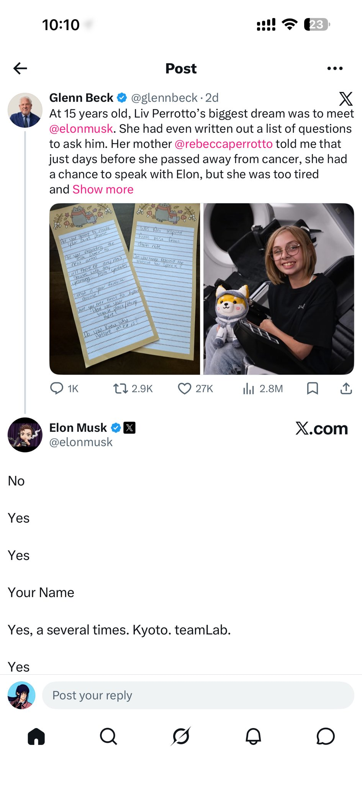

RyougiShiki
@damniwokeup
关于炽烈已极
19h前，马斯克发了一条推文，阴阳两隔地回答了一位已经去世的女孩的问题—这位女孩患有癌症，作为一个科幻迷，她想问马斯克的问题还留在她的书桌上，马斯克答应把她设计的柴犬玩偶，定为SpaceX的吉祥物。
我想说，有没有可能，我们能让他也看见我的置顶推文，并且提供某些帮助？这是一个不现实的幻想，但可能会有哪怕亿分之一的概率也值得尝试，如果你能看见我的这条消息，并且是炽烈已极的亲友（亦或者是愿意帮助我的路人），否希望你能帮我转发我主页的置顶推文。
GOD BLESS YOU🙏
